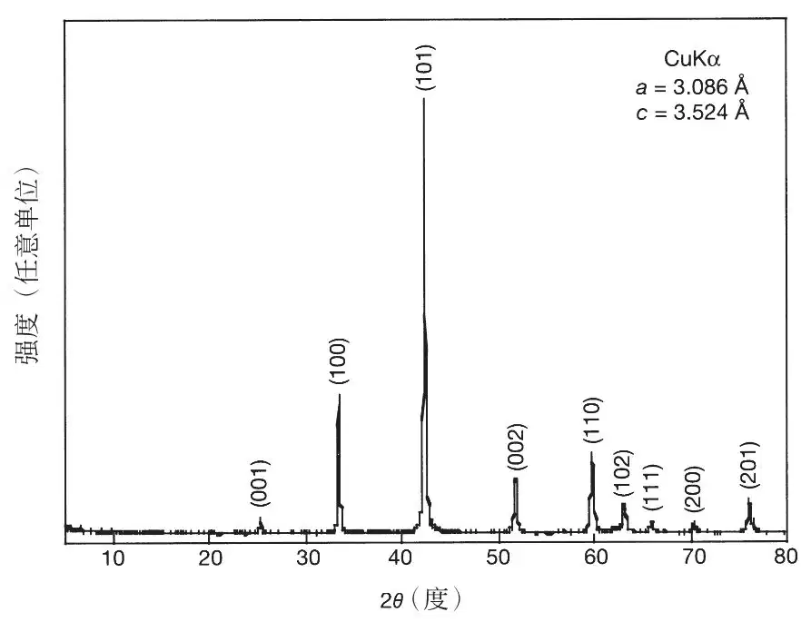
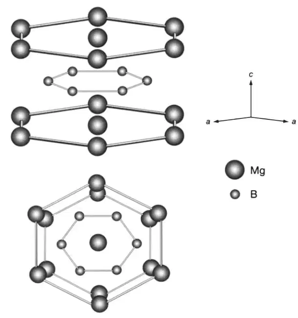
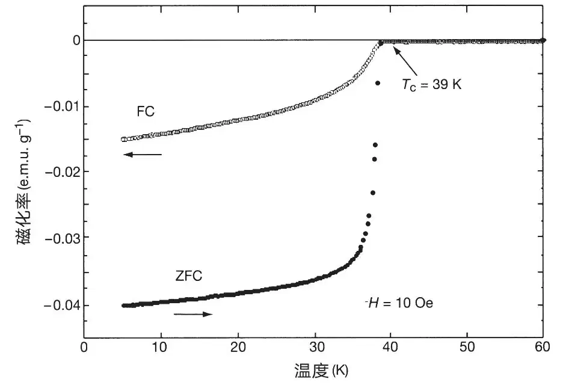
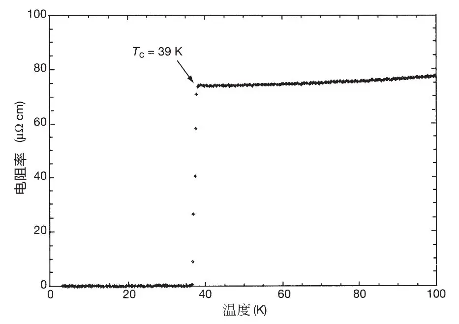

英文
英文永松纯等
编者按
到2001年为止，在温度超过130 K的多种基于铜氧化物的材料中已观测到超导性。本文中物理学家永松纯及其同事们报道了在温度“仅仅为”39 K时观测到的超导性，但这是在一种非常不一样的材料中观测到的：金属化合物二硼化镁。这项工作创造了金属化合物超导转变温度的一个新纪录，因为从1973年到此之前，这种转变温度最高只有23 K。后续的工作表明，尽管存在一些特殊性，这种化合物的性质符合标准的BCS（巴丁–库珀–施里弗）超导理论。由于原料和制造成本低，二硼化镁已被广泛地用于超导体的实际应用中。 英文
鉴于在提高铜氧化物的超导转变温度上所取得的巨大成就（见参考文献1中的综述），其他类型材料的超导转变温度Tc可以被提高到何种程度自然而然地引起了人们的关注。现有报道中，非铜氧化物体超导性的Tc最高值，在电子掺杂的CsxRbyC60中为33 K（参考文献2），在Ba1-xKxBiO3中为30 K（参考文献3）。（近期发现空穴掺杂的C60超导转变温度Tc高达52 K[4]，尽管那次实验的原本目的是为了揭示超导电流仅局限于C60晶体表面，而非检测整体。）本文中报告了二硼化镁（MgB2）中体超导的发现。磁化和电阻测量表明超导转变温度为39 K，我们相信这是非铜氧化物体超导的至今为止所确定的最高转变温度。 英文
样品是用粉末状镁（Mg; 99.9%）和粉末状的非晶硼（B; 99%）在干燥箱中制备的。两种粉末以适当的比例（Mg∶B=1∶2）混合，研磨并挤压成圆片。将这些圆片置于热等静压（HIP）炉（O2Dr.HIP，日本神钢集团）中，在196 Mpa的高氩压强和973 K的温度下加热10小时。粉末X射线衍射通过带有石墨单色仪的常规X射线光谱仪（RINT-2000，日本理学公司）来进行。强度数据利用Cu靶的Kα辐射采集，2θ范围从5°到80°，步长宽度为0.02°。 英文
图1为一种典型的在室温下获取的MgB2的X射线衍射图。假定一种六方晶胞，其a=3.086 Å，c=3.524 Å，可以将所有高强度的峰进行标记。图2展示了MgB2的晶体结构（参考文献5），空间群为P6 / mmm（编号191）。如图2所示，硼原子是按层排列的，镁层交错插入硼层。每一层的硼原子结构与石墨每层的结构相同：其中每个硼原子与其他三个硼原子是等距的。因此，MgB2是由两层硼以及一层镁沿六方晶格c轴构成的。 英文

图1．室温下MgB2的典型X射线衍射图 英文

图2．MgB2的晶体结构 英文
磁化强度测量同样是通过超导量子干涉磁强计（SQUID）完成（MPMSR2，Quantum Design）。图3显示了MgB2的磁化率（χ=M / H，其中M为磁化强度，H为磁场）在零场冷却（ZFC）以及在10 Oe的场冷却（FC）条件下随温度变化的曲线。通过测量在磁场中冷却状态下的迈斯纳效应，明确地证实了超导相的存在。在温度为39 K时，开始观测到明确的迈斯纳效应。在温度为5 K时，10 Oe磁场下超导体积分数为49%，这就表明本质上是体超导性。在电阻测量中我们使用的是常规的四探针技术。 英文

图3．MgB2的磁化率χ随温度的变化。数据分别表示在零场冷却（ZFC）以及在10 Oe的场冷却（FC）条件下的测量结果。 英文
图4显示了MgB2在零磁场下电阻率随温度的变化关系。转变温度的起止点分别出现在39 K和38 K，这就表明在该系统中真正实现了超导性。 英文

图4．零磁场下MgB2的电阻率随温度的变化关系 英文
（崔宁 翻译；韩汝珊 郭建栋 审稿）